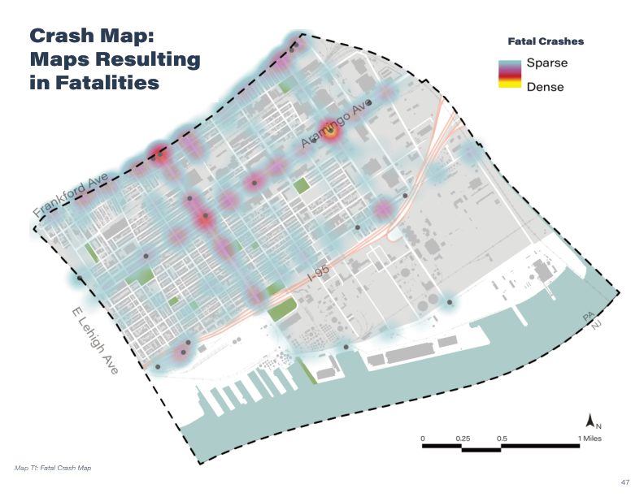
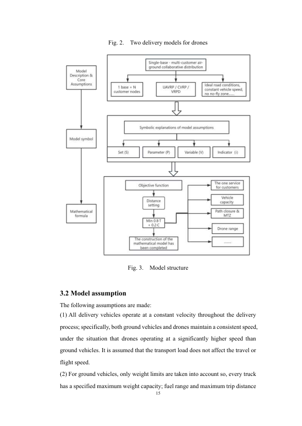
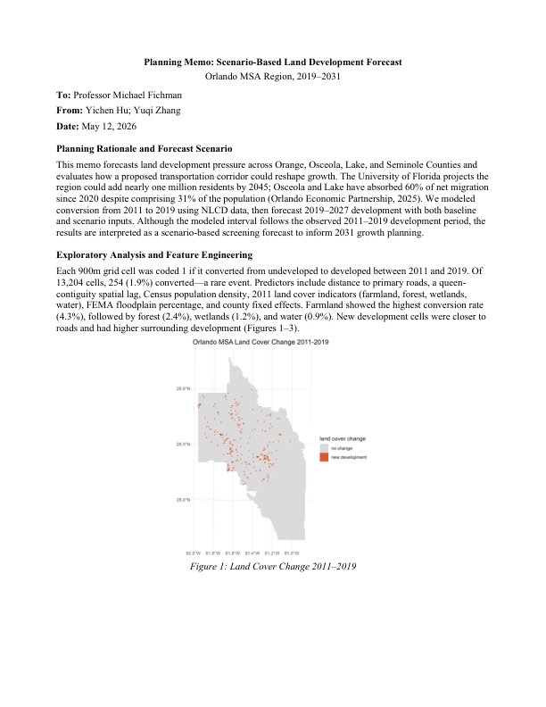
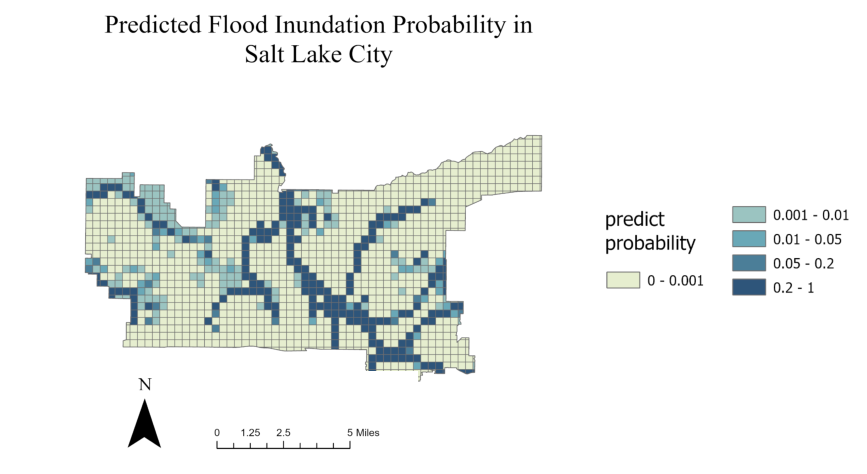
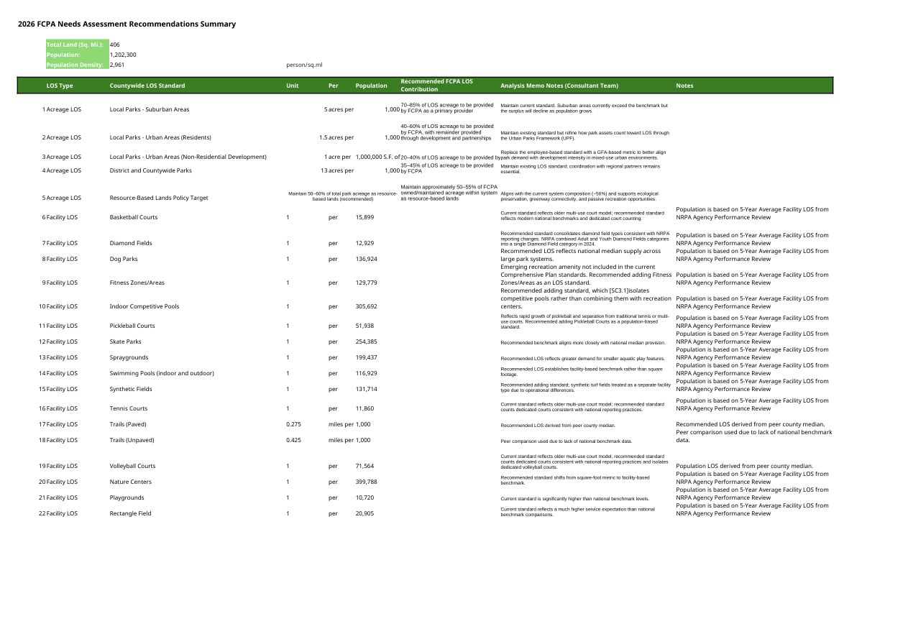
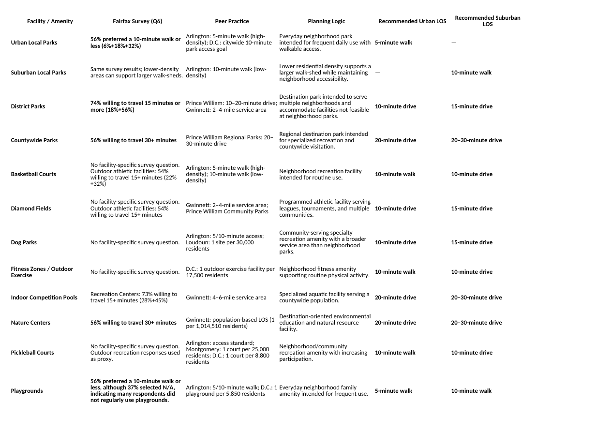
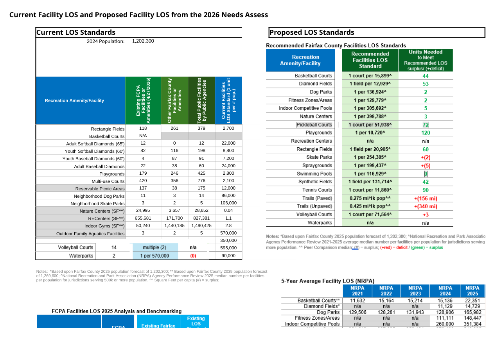
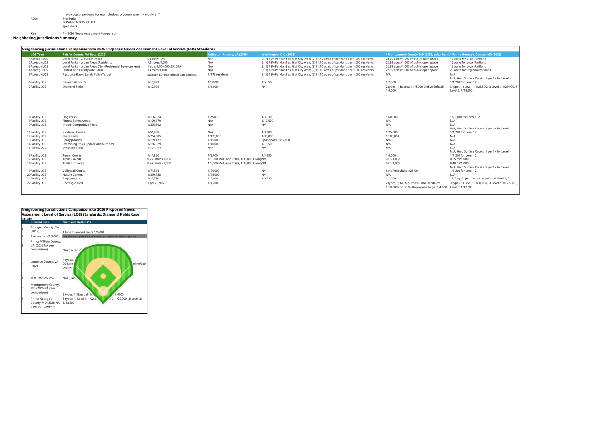
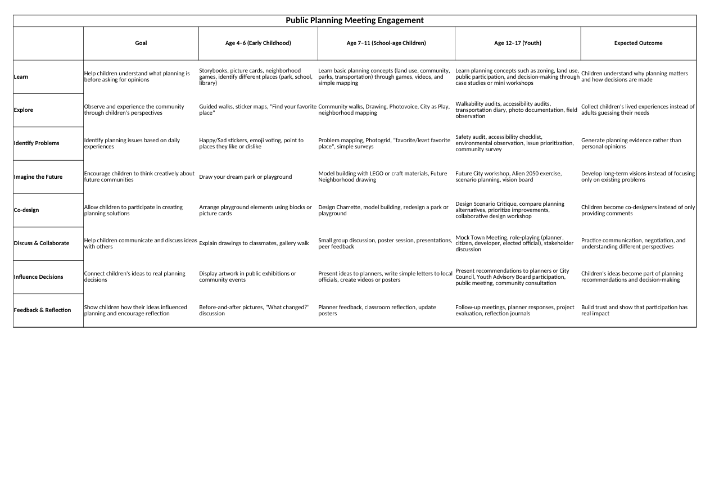

01 / STUDIO
Port Richmond Community Development Plan
Built a neighborhood framework around roadway hierarchy, transit access, truck movement, and a more connected public realm.
Selected work by Yuqi Zhang, a Philadelphia-based MCP student translating data, movement, and public input into clearer planning decisions.
I study how transportation and public space shape everyday access. My work combines spatial analysis with quantitative research to develop clear, place-specific planning recommendations.
Projects that show how I move from spatial evidence to planning judgment—and then communicate the result clearly.
Click any map or graphic to view the full-resolution sample.

Built a neighborhood framework around roadway hierarchy, transit access, truck movement, and a more connected public realm.

A controlled comparison of three delivery systems in Shenzhen Talent Park using Python, Gurobi, nearest-neighbor initialization, and genetic algorithms.

Compared a baseline forecast with a hypothetical corridor scenario using a 900 m grid, logistic regression, road proximity, land cover, spatial lag, and county effects.

Built a generalized probability surface from terrain, drainage, river distance, and impervious cover, then transferred the model to Salt Lake City with explicit limitations.
As a Planner Intern in Long Range Planning, I supported evidence-based park planning through policy research, service recommendations, facility inventory, peer standards, and children’s engagement work.
Click any Excel output to inspect the clearer full-size version.





These are proposed working outputs, not adopted standards. Children’s toolkit activities are proposed engagement methods; implementation and evaluation are not documented here.
A toolkit built for the moments when planning work has to be both technically sound and understandable to other people.
ArcGIS Pro, parcel screening, accessibility, environmental constraints, and map-based reasoning.
Python optimization, R and Excel analysis, benchmarks, scenarios, and reproducible outputs.
Connecting evidence to policies, standards, equity questions, and feasible interventions.
Technical reports, diagrams, presentations, and graphics that make decisions easier to see.
Open to conversations about transportation planning, GIS, public-sector planning, and collaborative city-making.
yqizhang@upenn.edu